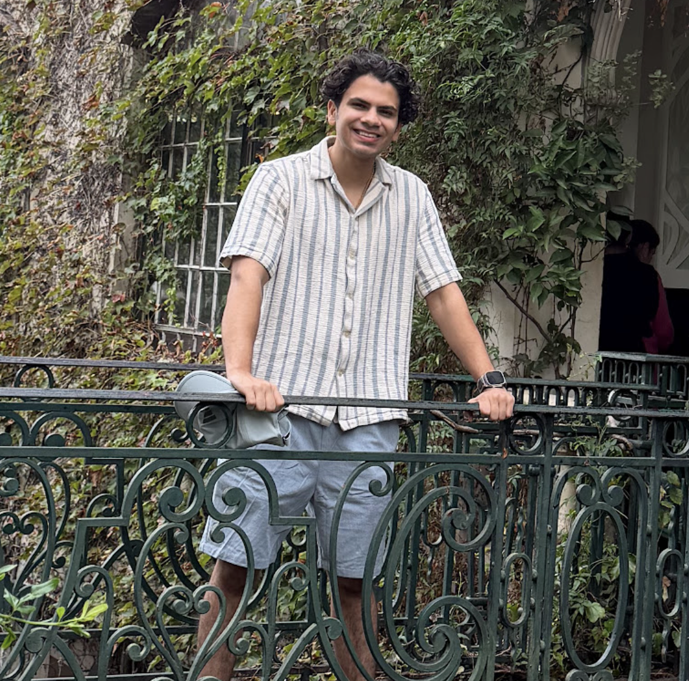
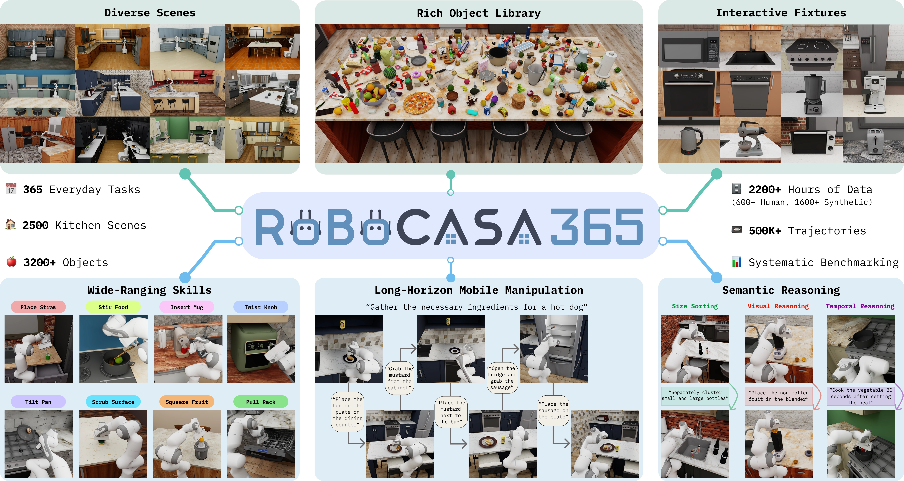

|
 |
Sep Nasiriany
I am a Visiting Researcher at UT Austin's Robot Perception and Learning (RPL) Lab, where I work with Professor Yuke Zhu on large-scale robot learning, simulation, and real-world generalization. I completed my undergraduate degree in Computer Science at the University of California, Santa Cruz. My research interests lie in reinforcement learning, generalist robotics, and simulation-to-real transfer. Recently, I've been focusing on building large-scale simulation benchmarks, studying how robots learn across diverse tasks, and developing co-training pipelines that combine simulated and real-world robot data to improve generalization. |
|
 |
RoboCasa365: A Large-Scale Simulation Framework for Training and Benchmarking Generalist Robots
Accepted to International Conference on Learning Representations (ICLR), 2026
|